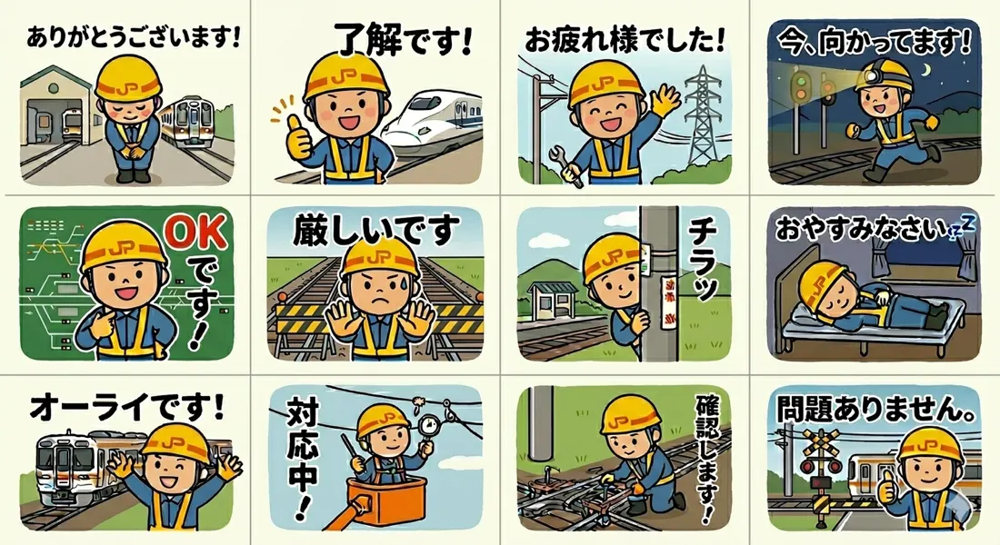
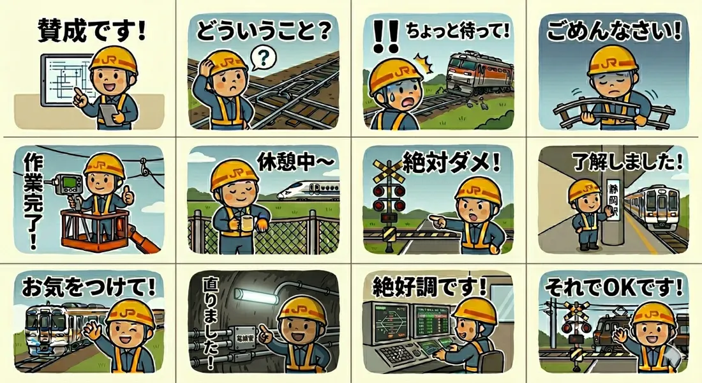

01 / CONCEPT
普段使いできて、鉄道現場らしいキャラクターへ。
最初に決めたのは、日常の連絡で使える言葉と、鉄道の保全作業を組み合わせることでした。黄色いヘルメット、濃紺の作業服、反射ベストを身につけた作業員を「守り鉄君」と名づけ、線路、踏切、駅、制御盤などを背景にしたスタンプを目指しました。
企業ロゴをそのまま使わないよう、ヘルメットのマークはオリジナルのものへ変更。生成を始める前に外見、色、線の太さ、世界観を文章にしたキャラクター定義書も作りました。
02 / DIALOGUE WITH AI
一度で完成させず、違和感を言葉にして返す。
Geminiには、複数案を1枚のシートとして生成してもらいました。ただ、最初から理想どおりだったわけではありません。信号の現示、分岐器の形、高所作業車、踏切の遮断かん、夜間作業の照明など、鉄道現場として気になる点を一つずつ具体的に伝えて修正しました。
「もっと鉄道らしく」ではなく、「信号機を1本の柱に2灯設置する」「手持ちライトをヘルメット装着型にする」のように、直したい対象と状態を具体的に伝える。
同じキャラクターを繰り返し生成すると顔や服装が少しずつ変わるため、完成度の高い画像を参照として添付し、固定の定義書を毎回渡す運用にしました。文言と背景の重複を避けるため、作成済み・未作成を管理するカタログも用意しています。

03 / FINISHING
生成画像を、そのまま申請できるわけではない。
AIが生成したシートから各イラストを切り出し、背景を透過したPNGに加工しました。さらに、スタンプ画像とは別に、ストアで使う240×240pxのメイン画像と、トーク画面で使う96×74pxのタブ画像も準備します。
透過PNG / 縦横とも偶数
ストアに表示する代表画像
トークルームの選択画像
04 / SMALL ROADBLOCKS
最後に効いたのは、画像と入力欄の細かな仕様。
Creators Marketでは、最初から表示される英語欄を日本語へ置き換えるのではなく、「言語を追加」から日本語を増やす必要がありました。説明文も画面上の文字数判定に合わせて何度か短く調整しました。
最も悩んだのは画像アップロードです。規定の範囲内なのに通る画像と通らない画像がありましたが、原因は切り出した画像の幅または高さが奇数だったこと。縦横のピクセル数を両方とも偶数に修正すると、すべて登録できました。サイズの上限だけでなく、偶数という条件まで確認する必要があります。
PNG形式、透過背景、十分な余白、規定サイズ内、そして縦横とも偶数。この5点を最初からテンプレート化すると作業が速くなる。

05 / CONCLUSION
生成AIを使えば、思っていたよりずっと作れる。
絵をゼロから描けなくても、コンセプトを決め、違和感を具体的な言葉で伝え、必要な加工を加えれば、スタンプとして使えるところまで持っていけました。仕上がりも想像以上で、鉄道現場らしさと親しみやすさを両立できたと思います。
一方で、AIが出した画像を受け取るだけでは完成しません。キャラクターを一貫させる定義、細かな修正指示、申請仕様への調整まで含めて「つくる」作業でした。だからこそ、完成したときの手応えも大きいチャレンジになりました。